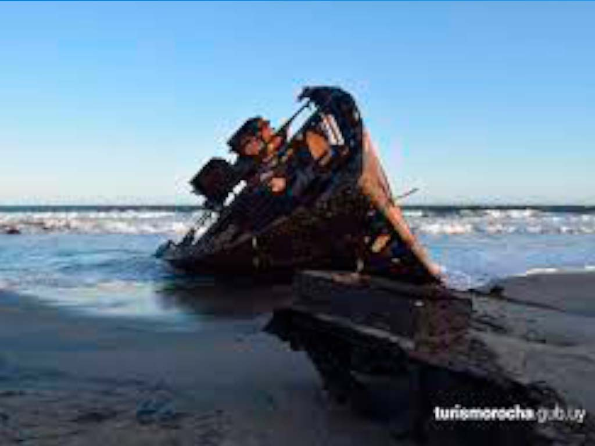
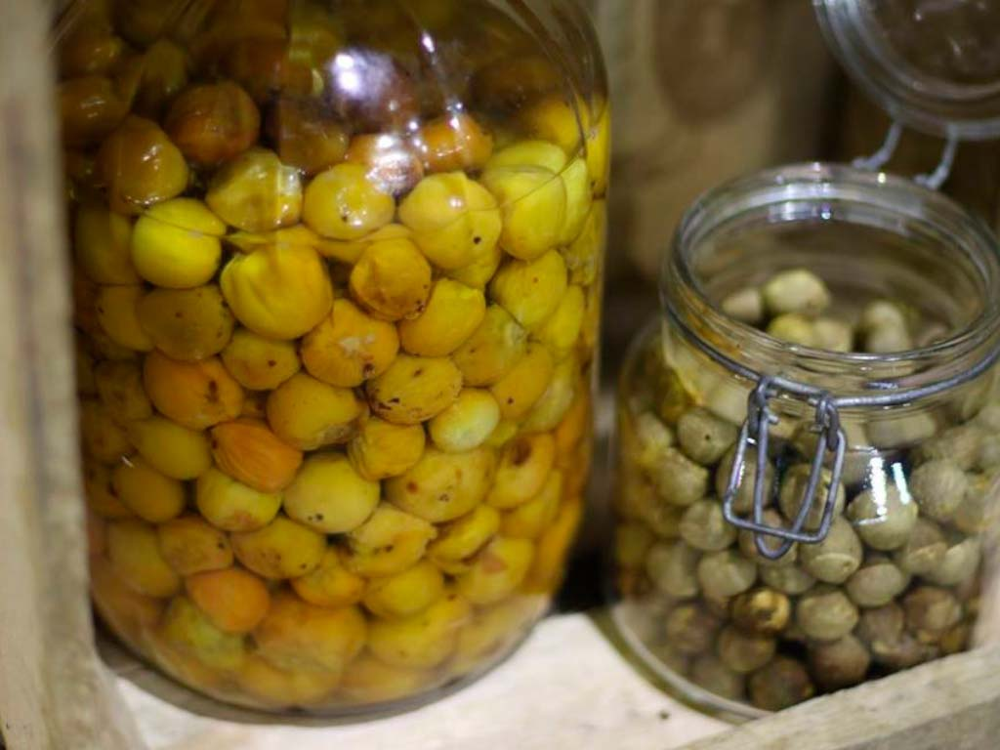

Te dejo una opcion de codigo para usar grillas que si bien no es bidimensional es una forma de trabajar con grids y media queries

 <section class="grid-imperdibles">
            <div class="grid-carnaval flex-interno">
                <h2>CARNAVAL DE LA PEDRERA</h2>
                <p>El Carnaval de La Pedrera es una fiesta callejera
                    en donde los jóvenes beben y bailan hasta largas horas de la mañana,
                    incluso una vez salido el sol. Por esto te recomendamos que si vas a ir a la fiesta
                    de carnaval lleves tus lentes de sol por si la mañana.</p>
                
            </div>
            <div class="grid-naufragios flex-interno">
                <h2>NAUFRAGIOS</h2>
                <p>
                    Son incontables los naufragios que se han producido frente a las costas de Rocha a lo largo de la
                    historia
                    desde los tiempos de Juan Díaz de Solís. Estas tragedias forman parte de la identidad histórica de
                    Rocha,
                    dejando su huella en las tradiciones y la cultura.
                    Los faros de La Paloma y Cabo Polonio han prevenido los hundimientos durante el último siglo, pero
                    aún los locales cuentan leyendas de piratas,
                    esoros escondidos y barcos hundidos de los orígenes de la zona.
                    Algunos restos de las embarcaciones pueblan el fondo marino, mientras otros permanecen en las playas
                    como testimonio de su abrupto final.
                    De esta forma los naufragios de Rocha se incorporaron al circuito turístico como otro atractivo,
                    con sus historias y sus misterios.
                </p>
                
            </div>
            <div class="grid-butia flex-interno">
                <h2>BUTIA</h2>
                <p>
                    Macerados en alcohol producen un exquisito licor (la tradicional caña de butiá)
                    o hervidos con azúcar se transforman en una rica "miel de butiá”.
                    La pulpa puede conservarse congelada durante un año, y de ella se extrae el jugo, en tanto que de
                    la
                    fibra se hace harina para panificados.
                    Las semillas del butiá, molidas y tostadas, se utilizan para elaborar "café de coco", y se toma
                    como
                    infusión, o agregado al mate.
                    El helado de butiá se ha transformado en uno de los sabores artesanales favoritos durante el verano
                    en
                    heladerías de los balnearios de Rocha.
                </p>
                
            </div>
            <div class="grid-cerro flex-interno">
                <h2>CERRO DE LA BUENA VISTA</h2>
                <p>
                    Su nombre lo dice todo, el Cerro de la Buena Vista es el principal atractivo de Barra de Valizas, es
                    el punto más elevado de las dunas, de la costa de Uruguay, que separan este balneario de Cabo
                    Polonio. Desde su cima el panorama es espectacular, la isla Castillo Grande, la isla Seca, las
                    playas oceánicas, el Cabo Polonio, la Laguna de Castillos, el Arroyo Valizas y el pueblo se
                    despliegan en un paisaje inolvidable.
                </p>
                
            </div>
        </section>


Continua trabajando con grids, y modificando lo necesario dentro con flex o box model


.grid-Lugares {
    display: grid;
    grid-template-columns: repeat(4, 1fr);
    grid-template-rows: auto;
    column-gap: 5px;
    grid-template-areas: "PDD CP LP AD ";
    width: 90%;
    margin: 0 auto
}

.grid-PuntaDelDiablo {
    grid-area: PDD;
}

.flex-internoL {
    display: flex;
    flex-direction: column;
    padding: 1.25rem;
    text-align: center;
    background-color: aliceblue;
    align-items: center;
    justify-content: center;
}


GRID INDEX

.grid-principalIndex {

    display: grid;
    grid-template-columns: 100px 100px;
    grid-template-columns: repeat(2, 1fr);
    column-gap: 5px;
    grid-template-areas: "textoB fotoB";
    width: 90%;
    margin: 0 auto
}

.grid-Texto {
    grid-area: textoB;
}
.grid-Foto {
    grid-area: fotoB;
}

TEXTO DE BIENVENIDA

.grid-TextoDeBienvenida flex-internoTexto{

    display: flex;
    flex-direction: column;
    padding: 1.25rem;
    text-align: center;
    align-items: center;
    justify-content: center;
    width: 310px;
    height: 390px;
    border: solid 0, 5px rgb(179, 151, 126);
    background-color: peachpuff;
    font-family: 'Edu NSW ACT Foundation', cursive;
    font-size: large;
    font-style: oblique;
    font-weight: bolder;
    text-align: center;
    color: rgb(92, 71, 22);
}


FOTO 
.flex-internoFoto {
    display: flex;
    flex-direction: column;
    padding: 1.25rem;
    text-align: center;    
    align-items: center;
    justify-content: center;
    width: 580px;
    height: 390px;
}
